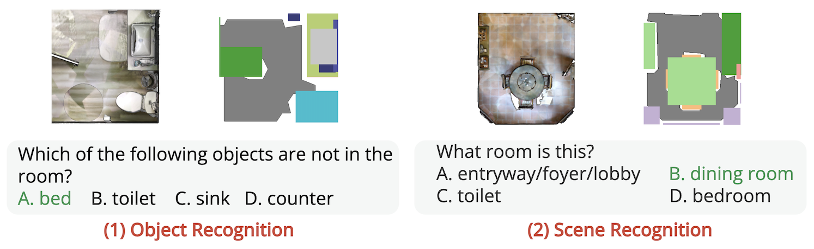
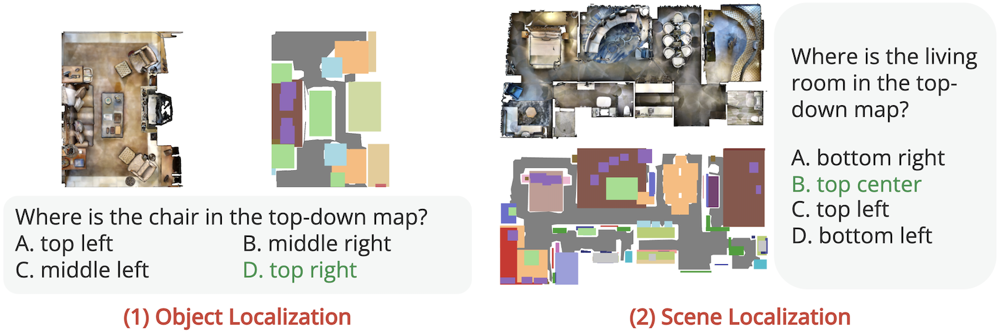
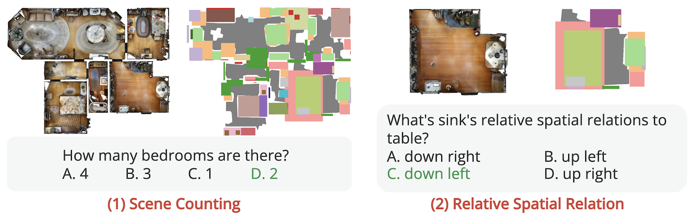
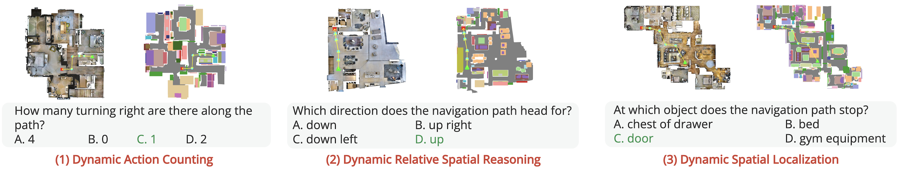

1) We define the top-view spatial reasoning challenge for VLMs via 4 carefully designed tasks of increasing complexity, also encompassing 9 distinct fine-grained sub-tasks with a structured design of the questions focusing on different model abilities.
2) We collect the TopViewRS dataset, comprising 11,384 multiple-choice questions with either photo-realistic or semantic top-view maps of real-world scenarios through a pipeline of automatic collection followed by human alignment.
3) We use TopViewRS to evaluate and study 10 VLMs from different model families and sizes, highlighting the performance gap compared to human annotators.
Top-view perspective denotes a typical way in which humans read and reason over different types of maps, and it is vital for localization and navigation of humans as well as of non-human agents, such as the ones backed by large Vision-Language Models (VLMs). Nonetheless, spatial reasoning capabilities of modern VLMs remain unattested and underexplored. In this work, we thus study their capability to understand and reason over spatial relations from the top view. The focus on top view also enables controlled evaluations at different granularity of spatial reasoning; we clearly disentangle different abilities (e.g., recognizing particular objects versus understanding their relative positions). We introduce the TopViewRS (Top-View Reasoning in Space) dataset, consisting of 11,384 multiple-choice questions with either realistic or semantic top-view map as visual input. We then use it to study and evaluate VLMs across 4 perception and reasoning tasks with different levels of complexity. Evaluation of 10 representative open- and closed-source VLMs reveals the gap of more than 50% compared to average human performance, and it is even lower than the random baseline in some cases. Although additional experiments show that Chain-of-Thought reasoning can boost model capabilities by 5.82% on average, the overall performance of VLMs remains limited. Our findings underscore the critical need for enhanced model capability in top-view spatial reasoning and set a foundation for further research towards human-level proficiency of VLMs in real-world multimodal tasks.
We define 4 different tasks which cover a total of 9 finer-grained sub-tasks. The tasks are designed to have an increasing level of complexity, where each subsequent task depends on the abilities measured in the preceding one(s).
(1) Top-View Recognition evaluates the fundamental ability to interpret the input map, and covers two sub-tasks: Object Recognition and Scene Recognition. It does not require the model to identify specific locations of objects and rooms.
(2) Top-View Localization investigates whether the model can localize objects or rooms in the top-view map based on textual descriptions, including Object Localization and Scene Localization as two sub-tasks. Beyond understanding the top-view map as a whole, it requires the model to ground entities in the map, representing the model's ability to align spatial descriptions with corresponding locations.
(3) Static Spatial Reasoning aims to evaluate the model's spatial reasoning ability with more complex questions. It includes two sub-tasks: reasoning over Scene Counting and Relative Spatial Relations between different objects and rooms. These questions require the model to perform multi-step reasoning based on the recognition and localization of entities in the top-view map.
(4) Dynamic Spatial Reasoning Finally, we introduce a novel task that involves dynamic spatial reasoning over top-view maps in the context of agent navigation. It requires the model to understand the sequential relations along the points of the navigation path (sub-task Dynamic Action Counting) and answer spatial questions with regard to the dynamic navigation path (sub-task Dynamic Relative Spatial Reasoning) and the circumstantial environments (Dynamic Spatial Localization).
We evaluated human performance on a dataset of 60 top-view maps, with four participants achieving 90% accuracy across all the sub-task. This revealed a significant performance gap, with humans outperforming models by over 50% across all the sub-tasks that involve spatial awareness.
We explore Chain-of-Thought (CoT) reasoning for our tasks, where we ask models first localize entities before answering. Experiments with GPT-4V and Gemini showed a performance increase of 6.50% on realistic maps and 5.14% on semantic maps, highlighting the effectiveness of step-by-step reasoning.
@misc{li2024topviewrs,
title={TopViewRS: Vision-Language Models as Top-View Spatial Reasoners},
author={Chengzu Li and Caiqi Zhang and Han Zhou and Nigel Collier and Anna Korhonen and Ivan Vulić},
year={2024},
eprint={2406.02537},
archivePrefix={arXiv},
primaryClass={cs.CL}
}